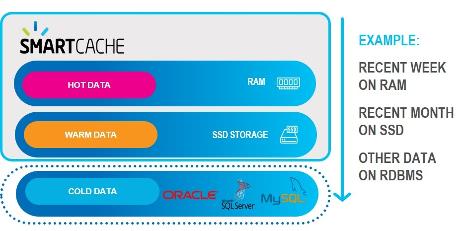
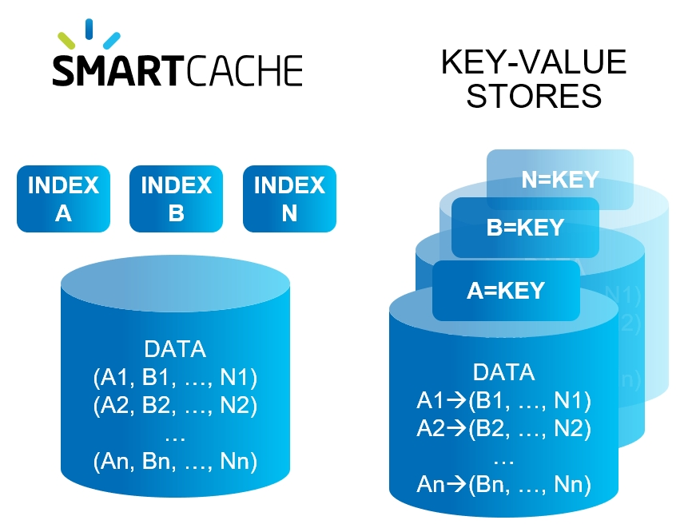
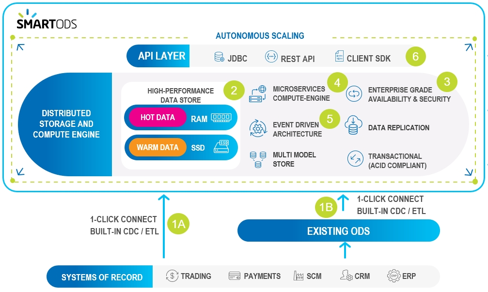

Space-Based Remoting
Remote service invocations using Jini Network Architecture that provide location transparency for enterprise-wide data access
Core API and In-Memory Data Grid
Direct access to a RAM-based data grid or Space
Messaging and Events
Object-based event processing, based on and extending the properties of Java EE message-driven beans
Integrations
Integration capabilities with non-
See
SmartCache provides fast, scalable cache from any data store.
SmartODS is an integrated, enterprise-wide data store that allows you to create a new Operational Data Store (Digital Integration Hub) or augment your existing data store.
Smart Augmented Transactions provides translytical processing for fast access, updating and analysis of enterprise-critical information.
Smart Portfolio meets the following critical design criteria:
High-speed in-memory data grid with millisecond-range response time Multi-tiered data storage across RAM, SSD, and Storage-Class Memory (3DXPoint) Compressed RAM footprint Optimized data co-location for fast Join performance
Highly available, always-on data backup Disaster recovery via geo-redundancy, fast data replication and native persistence Data persistency with low latency and strong consistency Atomic, transaction-based processing
Support for complex SQL-99 compliant queries
Distributed processing partitions, with Wide Area Network support Automatic, trigger-driven vertical and horizontal scaling
Minimally-invasive installation
| Feature | SmartCache | SmartODS | Smart Augmented Transactions |
|---|---|---|---|
| Cloud, On-premise & Hybrid | |||
| 1-click cloud deployment | |||
| SQL | |||
| Auto Tiering (Hot, Warm, Cold) | |||
| Pre-built Codeless DB Connectors | |||
| Server Side aggregations | |||
| Support for multiple indexes | |||
| Multi-Model Store (Un/Semi/Structured) | |||
| Strong Consistency (ACID) | |||
| Federation of Multiple data stores | |||
| Microservices | |||
| Kafka | |||
| Multi-Region Replication | |||
| EDA (Event Driven Analytics) | |||
| Spark | |||
| Combined transaction & analytical processing | |||
| Data Lake Indexing (AnalyticsXtreme) | |||
| Deep Learning (Tensor, Caffe & Torch) |
SmartCache provides fast, scalable cache from any data store.
The SmartCache environment can be illustrated as follows:
| Item | Description | Technologies |

|
One-click connect to any RDBMS, on-premise or cloud, with built-in connectors (read-only or read-write) | Oracle, ....., AWS, Azure |

|
Data is stored in multiple data storage tiers — hot (in-memory), warm (SSD), and cold | RAM, SSD, HD, MemoryXtend |

|
High performance multi-index queries, fast aggregations on large datasets, and high concurrency | SQL-99 |

|
AlOps used for auto-scaling, automated caching policies and smart indexing | |

|
Digital applications connect and trigger SQL or client SDK queries with millisecond performance |
Here are some of the detailed technologies that make SmartCache smart.
SmartCache's Ops Manager GUI provides built-in connectors to the most popular databases:

Database tables can be imported as-is, or can be limited to selected columns and other properties using the Ops Manager GUI, and without writing custom code.
Data can be stored on-prem, in the cloud, or a hybrid combination of cloud and on-prem.
User-defined business rules allows you to place the most important data in "hot" storage (RAM), while other data can be in "warm" (SSD) or "cold" (HD) storage.

"Important" does not necessarily mean "most frequently accessed" — for example, your business rules may place premium customers in hot storage, even if their data is less frequently required.
Distributed server-side data aggregation and code co-location peovides high concurrency, full data integrity and reduces networking and serialization overhead.

Unlike simple key-value data stores, SmartCache uses secondary, tertiary, ... n-ary indexes to organize your data.
This means that where a key-value approach would duplicate the entire data store for each defined index, SmartCache allows a virtually unlimited number of indexes to be maintained — with very little RAM or processing overhead.

User-defined rules can automatically scale up/down or scale out/in when system demands change.
For example a rule could state:
When the RAM in use exceeds 80% of the total currently allocated RAM for more than 2 minutes, scale up the RAM by a factor of 4.
Rules can also be time-dependent, for example automatically changing storage allocations before and after Black Friday or other times when unusual transaction volumes may occur.
Using
SmartCache supports the full SQL-99 standard, allowing complex queries to be performed with optimal speed and minimal memory footprint. Custom SDK calls that use standard SQL requests can be handled without requiring source code changes.
SmartODS creates an optimized data store using your existing data store technology, or providing an independent, self-contained solution.
The SmartODS environment can be illustrated as follows:

| Item | Description | Technologies |

|
One-click connect to multiple systems of record with real-time and batch integrations | Oracle, ....., AWS, Azure |
| Connect to Existing ODS, using CDC or standard connectors/ETL | Oracle, ....., AWS, Azure | |
|
|
Data is stored in multiple data storage tiers — hot (in-memory), warm (SSD), and cold | RAM, SSD, HD, MemoryXtend |
|
|
Enterprise ready designed for 99.999% availability and data replication, and enterprise security | SQl-99 |
|
|
High performance compute engine with millisecond response time for digital applications | |
|
|
Event driven architecture - allow applications to subscribe to different event templates | |

|
Unified API layer for all digital applications and operational analytics |
Here are some of the detailed technologies that make SmartODS smart.
SmartODS provides an easy connection to your existing systems of record and ODS. This allows SmartODS to use your systems of record as its ODS implementation, or to create an ODS using SmartODS.
User-defined business rules allows you to place the most important data in "hot" storage (RAM), while other data can be in "warm" (SSD) or "cold" (HD) storage.
"Important" does not necessarily mean "most frequently accessed" — for example, your business rules may place premium customers in hot storage, even if their data is less frequently required.
xxxxxxxxxxxxxxxxxxxxxxxxxxxxxxxxxxx
xxxxxxxxxxxxxxxxxxxxxxxxxxxxxx